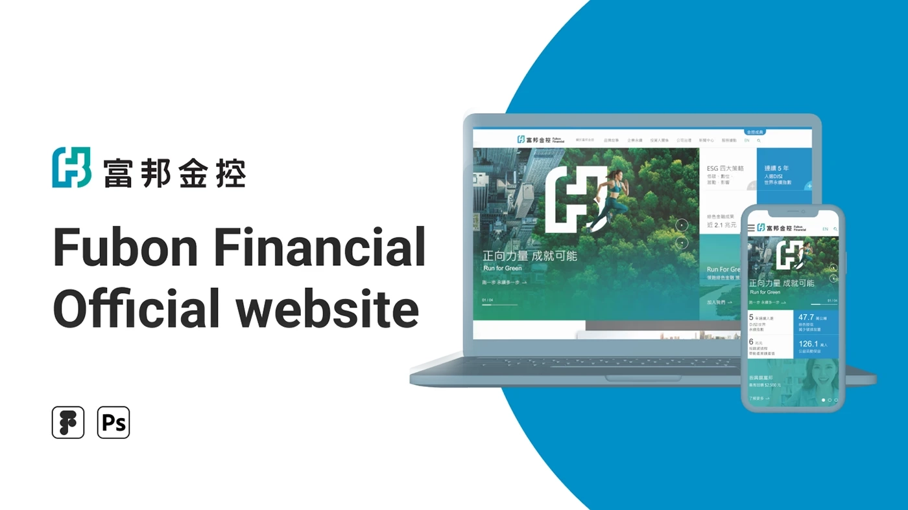
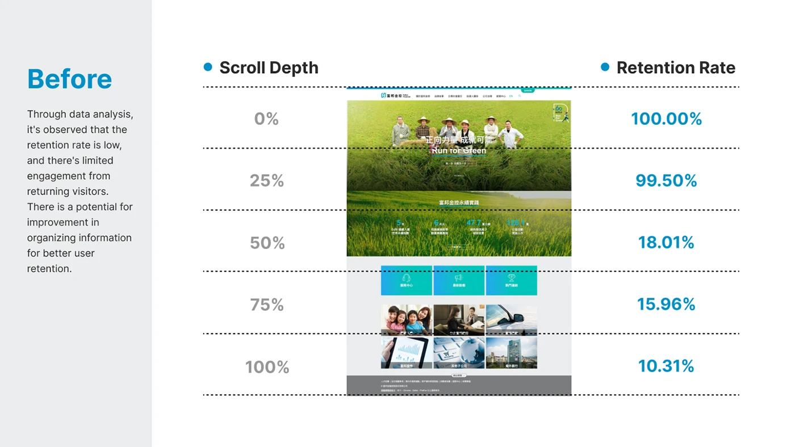
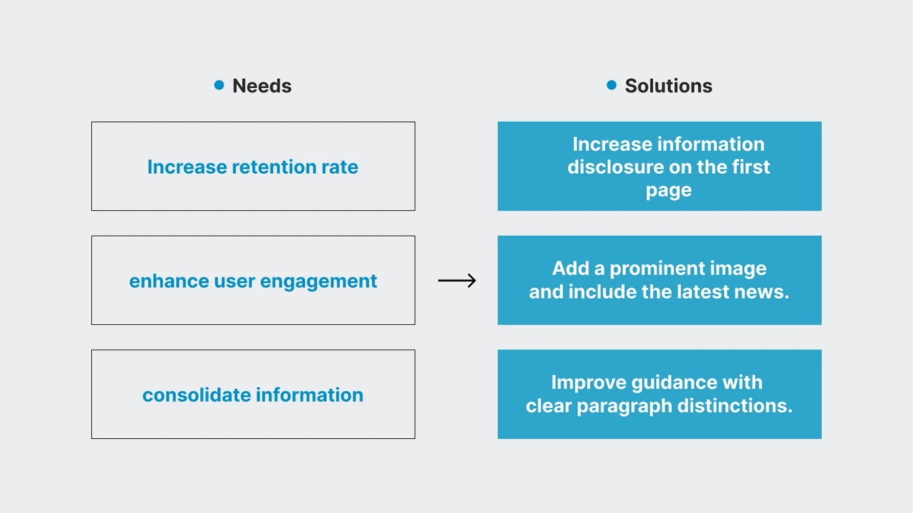
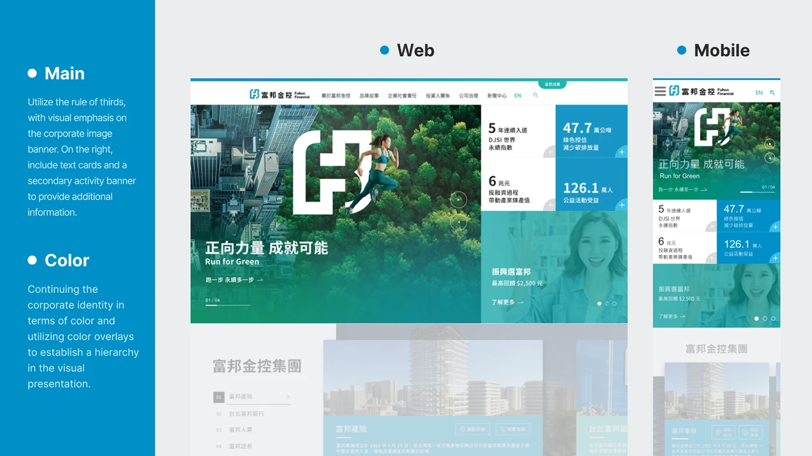
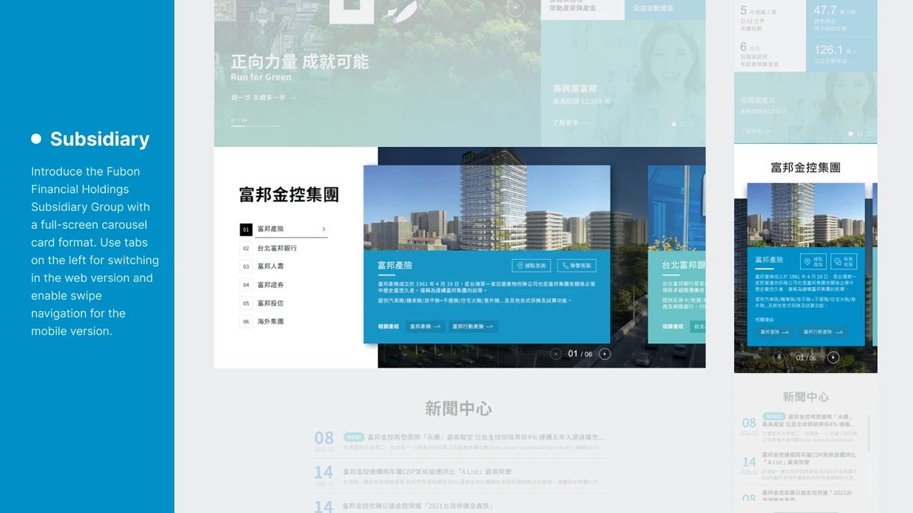
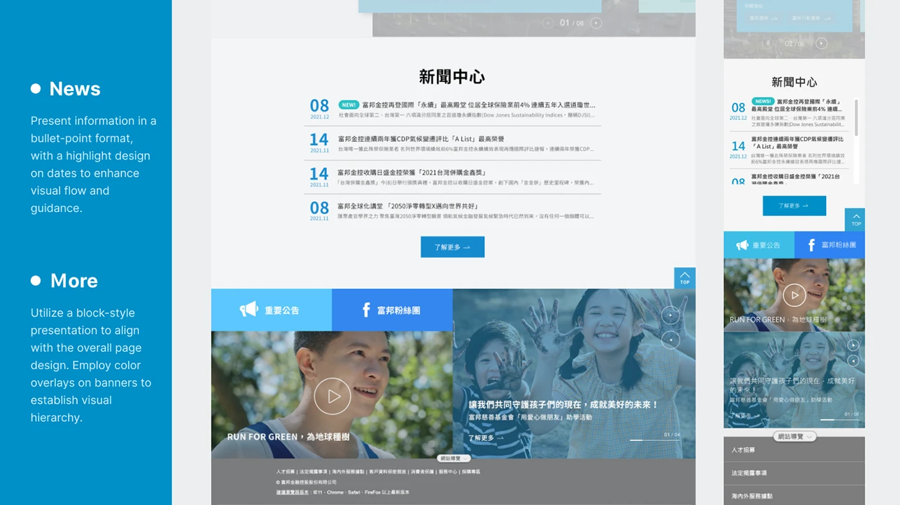
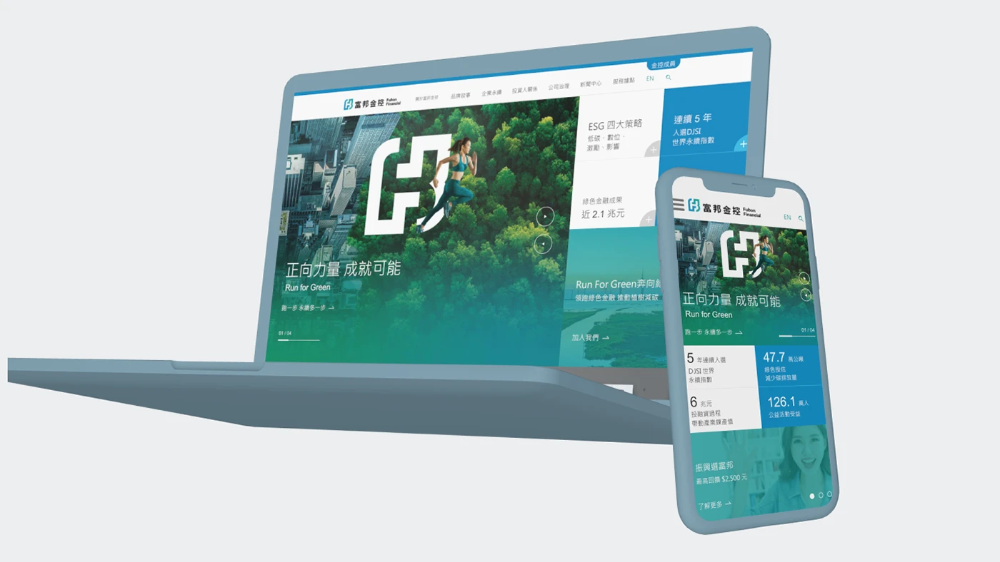

Case Study — 02
A homepage redesign for Fubon Financial. The old homepage kept losing people — by halfway down, most had already left — and there was so much on it that visitors struggled to find their way in. I led the redesign proposal, set the design direction, and built a design system to carry it forward.
01 — Research
I started from the data. Scroll depth showed that once people passed the halfway mark, retention had already dropped by more than half. GA click behaviour told the rest: what people actually clicked were the group's subsidiaries and the service centre — far more than the corporate-image banner up top. In other words, users came to find an entrance and get something done, not to admire the brand.



02 — Complication
That ran straight into a real tension. The brand side saw the homepage as the company's showcase — the banner had to be full-bleed, big, and beautiful. But users leave within about five seconds if they can't find a way in, and the numbers backed that up: by halfway down, most were already gone. Budget was limited too, so the work had to ship in phases. My job was to find a version both sides could live with — impressive enough, yet easy to get into.
03 — Design
I re-cut the layout on a rule-of-thirds grid: a large corporate-image banner stays on the left to satisfy the brand's need for a showcase, while cards and second-tier activities fill the right so the first screen reveals far more information and entry points. The subsidiaries became a carousel of cards — tabs on web, swipe on mobile — so the entrances people most wanted to reach sit right up front, visible and tappable. I pulled the whole visual language into a design system so later phases could build on it.



04 — Impact
After the redesign, mid-page retention clearly came back. At the halfway mark it rose to roughly 2.5× its previous level, and further down the page retention more than doubled across the board. Most of the users who used to drop off in the middle now stayed.